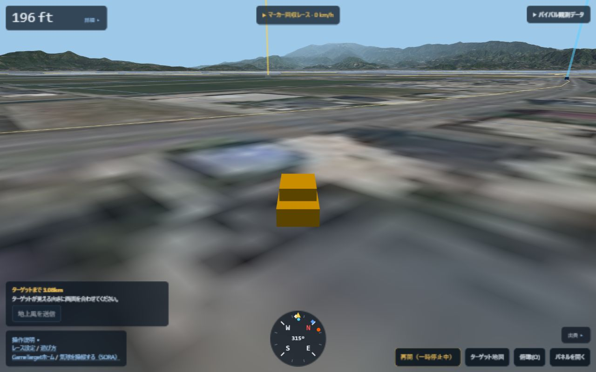
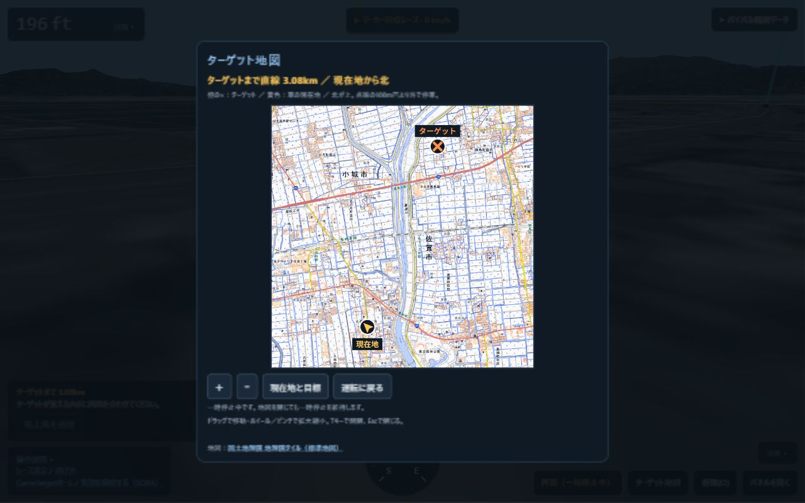
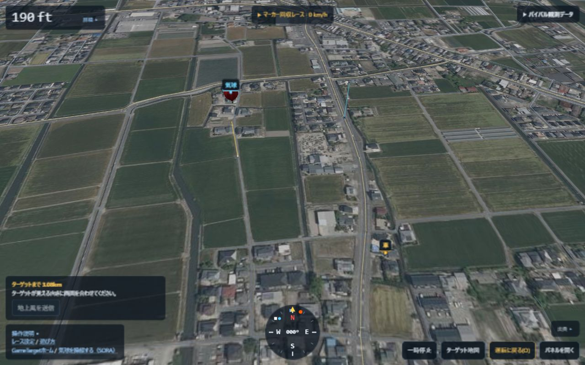

ソラくん
まずは試してみる！
SORA FRIENDS / GROUND TEAM
2026.09.23 · 新しい遊び方も紹介
黄色い車で、マーカーの落ちる先へ。
ソラくんたちと覚える、地上チームの大冒険。
PC / スマホ · インストールなし · 気球は自動操縦
きょうの主役は、
地上のきみ！
MEET YOUR GUIDES
まずは試してみる！
しくみと操作を案内。
空と風の話をしよう。
方角と地図を案内。
READ → TRY → DISCOVER
上から順番に。気になるところからでも。
きょうは地上から、気球チームをおうえんするよ！
きみは黄色い車を運転。気球は自動で飛んで、マーカーを落とすよ。
白は気球を追う仲間。青はターゲットの近くへ先回りする仲間だよ。
前へ、後ろへ。ハンドルは左右だね！
PCは WS で前後、AD でハンドル。矢印キーでもいいよ。スマホは「前進」「後退」と ← → を長押ししよう。前進は前へ、後退は後ろへ進むことだよ。
走っている向きと逆の入力でブレーキ。はじめは時間の速さを ×1 にしてね。

あれ？ ゴールはどっち？
「ターゲット地図」を開こう。PCは T でもOK。オレンジの×が目標、黄色い矢印がきみ。北が上だよ。
地図を見ている間は一時停止。「運転に戻る」で戻ろう。もともと止めていたときは、停止したままだよ。

地上からも風のお知らせができるよ！
ターゲットから100m以上離れて停車。地図を閉じて、3D画面にターゲットが見えるようにしよう。
「地上風を送信」が押せたら送信！ 1プレイに1回、50点だね。
100mより近い・走っている・ターゲットが隠れていると送れないよ。時間切れ・終了後も送信できないよ。
送るのは、ゲーム内のターゲット地点の地上風。風向は吹いてくる向き、風速はノットだよ。
気球も車も、いっしょに見たい！
「俯瞰(O)」（ふかん）で全体を見渡せるよ。俯瞰のまま運転もできるんだ。止めたいときは「一時停止」だよ。
P や風の表で、高さごとの風も見よう。マーカーも落ちる間に風で流されるよ。

マーカーを探すとき、もっと上も見たいな。
通常の視点で停車したら、ドラッグで見回そう。ホイール、スマホならピンチで拡大・縮小できるよ。
V または 👁 で「進行方向」と「気球を見る」を切り替えられるよ。走り出すか視点を切り替えると、見回した向きはリセットされるよ。
操作の図解 · 通常の視点で停車中に使えるよ。
あっ、もうマーカーが地面に！ これでおしまい？
まだ回収できるよ！ 着地の瞬間に30m以内なら1,000点。あとから30m以内へ近づいても500点だ。
目指すのはマーカーの着地点。オレンジのターゲットと、ぴったり同じ場所とは限らないよ。
ゲームの配点の説明。プレイ結果の実測値ではありません。
回収だけじゃなくて、チームへのお手伝いも点数になるんだね。
合計は回収 ＋ 道路走行 ＋ 地上風報告。道路は100mで1点。着地か時間切れで道路の加点は終わるよ。
時間内にマーカーが落とされていれば、時間切れのあとも回収を続けられるよ。あわてずに探そう！
リザルトに出るのは着地した瞬間の車との距離。あとから回収しても、この記録は変わらないよ。
DRIVER’S POCKET NOTE
「前進」「後退」で前後、← → でハンドル。長押しして運転しよう。👁 で視点、P で風の表、×1 で時間の速さを切り替えよう。
「ターゲット地図」「俯瞰」「一時停止」は画面のボタンでも使えるよ。
「パネルを開く」で確認しよう。
エリアを選び、風の表を確認・編集。地図で気球の離陸地点を選ぶと、黄色い車もその近くから出発するよ。「条件URLをコピー」で条件を共有できるよ。
エリア・風を選ぶ ↗地図は現在地とターゲットを確認するもの。表示中は一時停止するよ。俯瞰は3Dの全体を見渡す視点。時間は進み、運転もできるよ。
黄色い車は道路の外も自由に走れるよ。道路の加点は読み込み済みの道路が対象。青い仲間はターゲットの100m以内へ入らず、行ける道路で待つよ。
「レース設定」で街並みを選べるよ。PLATEAUのデータがある地域が対象。建物による通行制限はありません。
距離と配点は試作のゲーム設定です。
YOUR TURN!
道を探して、風を伝えて、マーカーを迎えにいこう。